By: Team T09-B3 Since: Feb 2018 Licence: MIT
- 1. Introduction
- 2. Quick Start
- 3. Features
- 3.1. Using CLI with ProgressChecker
- 3.2. List of All Commands
- 3.2.1. General
- Helping user with User Guide :
helpORh - Viewing a different tab :
viewORv[since v1.5] - Toggling theme :
themeORt - Undoing previous command :
undoORu - Redoing the previously undone command :
redoORr - History viewing the list of entered commands :
history - Refreshing the content :
refreshORrf[coming in v2.0] - Clearing all entries :
clearORc - Exiting the program :
exitORe - Back/Forward the browser in ProgressChecker
[coming in v2.0]
- Helping user with User Guide :
- 3.2.2. Exercise
- 3.2.3. Issue Tracker
- 3.2.4. Task List
- Add default task list:
newtasklistORnl - Viewing the default task list:
viewtaskORvt - Completing a task:
completeORct - Resetting a task as not completed:
resetORrt - Open URL of a task:
gotoORgo - Send reminder email when a deadline is near
[coming in v2.0] - View teammates' task list and progress
[coming in v2.0]
- Add default task list:
- 3.2.5. Teammate
- Adding a teammate:
addORa - Editing a teammate :
editORed - Uploading profile photo
- Listing all teammates :
listORl - Uploading profile photo
- Sorting all teammates :
sort - Finding/Searching teammates by the keywords of name:
findORsearch - Selecting a teammate :
selectORs - Deleting a teammate :
deleteORd
- Adding a teammate:
- 3.2.1. General
- 3.3. Saving the data
- 4. FAQ
- 5. Command Summary
1. Introduction
1.1. About the App
ProgressChecker is for students who prefer to use a desktop app to keep track of their learning progress for module CS2103/T.
In this version, you can add your teammates details into ProgressChecker. You can also create a new task list that syncs with Google Tasks. ProgressChecker displays Learning Outcomes and exercises pulled from the CS2103/T module website. Students can use these information to track their weekly homework and the progress of the project.
More importantly, ProgressChecker is optimized for students who prefer to work with a Command Line Interface (CLI) while still having the benefits of a Graphical User Interface (GUI).
If you are reasonably comfortable with using CLI, ProgressChecker can get your learning and project development tracking done faster than traditional GUI apps.
Interested? Now you are ready to jump to the Quick Start to get started. Enjoy!
1.2. Icons Meaning
You will be seeing these icons throughout the guide. Each icon display specific information.
| This exclamation mark means you should strictly follow the instruction here to avoid unwanted outcome from ProgressChecker. |
| This lightbulb icon means tips that you can try when using ProgressChecker. |
| This info icon means notes that you should pay attention to when using ProgressChecker. |
2. Quick Start
Getting started with ProgressChecker is as easy as downloading and launching the software in a couple of clicks! Listed below are the important steps that you will need to follow to get started:
-
Please ensure that you have Java version
1.8.0_60or later installed in your Computer.Having any Java 8 version is not enough.
This app will not work with earlier versions of Java 8. -
You can download the latest
progresschecker.jarhere. -
Next, create a new folder on your Desktop and name it ProgressChecker. Then, place the downloaded progresschecker.jar file into the new ProgressChecker folder you’ve just created.
Your jar file should now be residing in C:\Users\%UserProfile%\Desktop\ProgressChecker.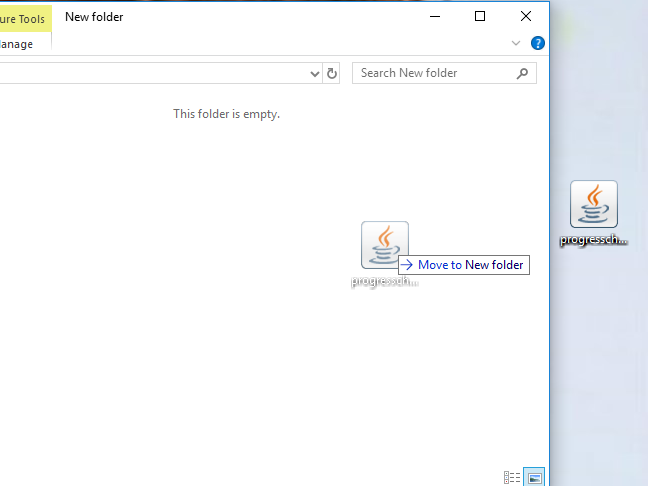 -
You can double-click the
progresschecker.jarfile to launch ProgressChecker. A GUI as shown below should appear in a few seconds.
Here are the four tabs(profile, task, exercise and issue) that you can switch in center panel:
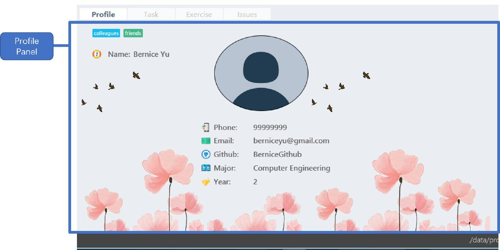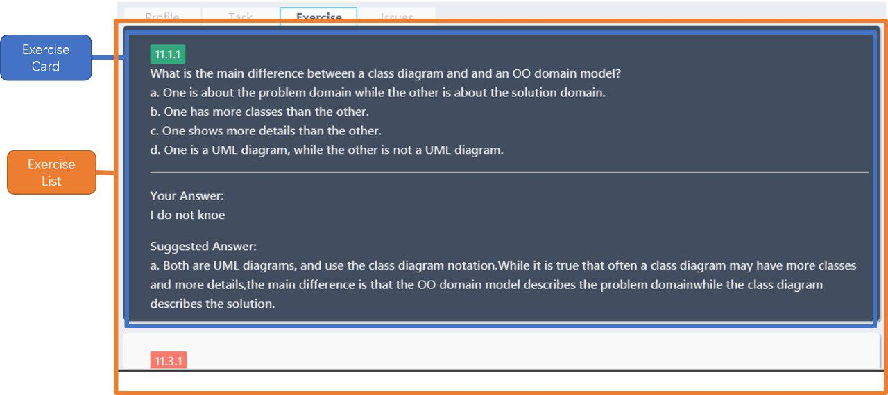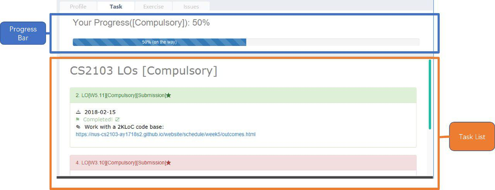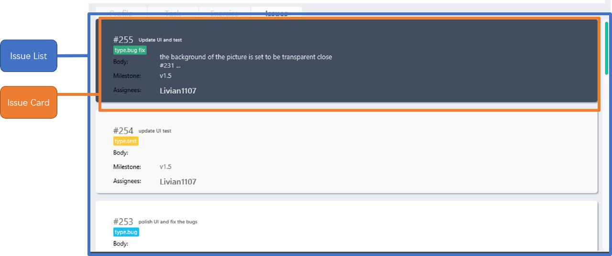 -
You should also notice that the following files shown below will have been automatically generated in the same directory as where your progresschecker.jar file is in upon launch.
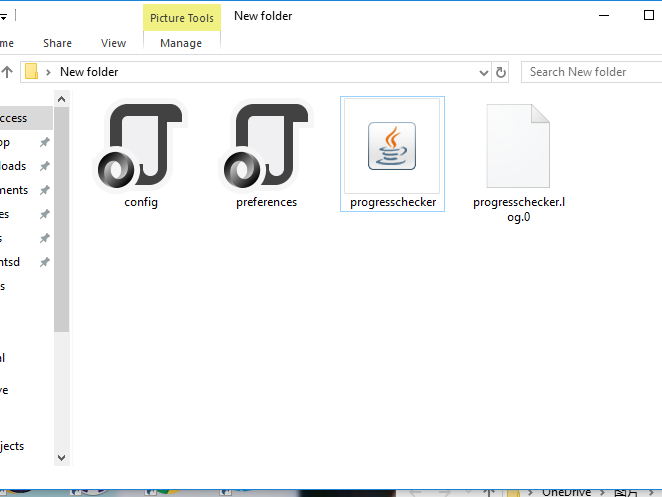Now, you are ready to start to explore ProgressChecker!
Please do NOT try other task-related command before you call newtasklistcommand.
3. Features
ProgressChecker is filled with lots of functionality that are easy to use. If you’re new to using CLI, our next section will give you a quick start to end process of using CLI with ProgressChecker.
3.1. Using CLI with ProgressChecker
Let’s start using ProgressChecker. To perform anything using CLI, you will have to type a command in the command box and press the Enter key to execute it.
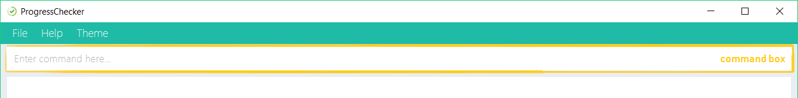
You can type a command and press Tab to auto bring out all the command parameters.
|
-
Start by typing the
helpcommand in the command box and press Enter to open the help window. This window contains the information you will need to learn how to use ProgressChecker. -
Next, let’s add a teammate’s details to your contact list.
Typeaddn/John Doe p/98765432 e/johnd@example.com m/Computer Science y/2 g/johndoe
Teammate John Doe should now be listed in your contact list.
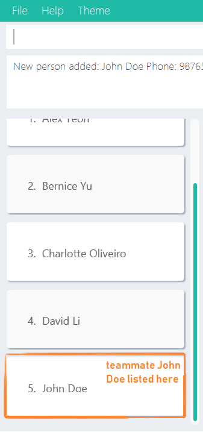 -
After adding all of your teammates' details into ProgressChecker, you will need to load the tasks you’re required to do into ProgressChecker.
Typenlto bring up the Google account authorization page. SelectAllow.
You should see the feedback that a verification code has been received. Return to ProgressChecker.This step in syncing of tasks can take up to 40 seconds. ProgressChecker might be in the state of not responding in the meantime.
-
Once the tasks have been loaded, you can view them.
Typeview taskthenvt *
You should now be on the Task tab and see a list of learning outcomes. -
When you have completed a learning outcome, you can mark them as complete.
Typect1to mark your first learning outcome as complete. You should now see that the status of the learning outcome has turned green with a tick in the checkbox. -
Now, let’s try answering an exercise.
Typeviewexercise
You should now be on the Exercise tab. You can scroll through and see the list of exercises available for week 11. Let’s answer question index 11.1.1.
Typeans11.1.1 a
You should now see your answer and the suggested answer reflected under question index 11.1.1. 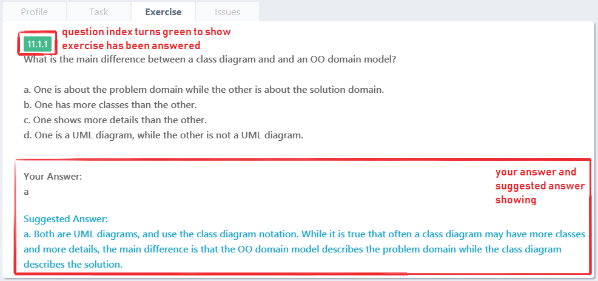 -
You can also view exercises from other weeks. Type
viewexercise 5
You should now be seeing week 5’s exercises in the Exercise tab. -
After checking your learning progress, you would want to manage your project development.
Typeviewissues
You should now be on the Issues tab. Now, let’s login into GitHub.
Typegitlogingu/YOUR_GITHUB_USERNAME pc/YOUR_GITHUB_PASSWORD r/YOUR_GITHUB_REPO_NAMEWords in UPPER_CASEare the parameters to be supplied by you e.g. ingitlogin gu/YOUR_GITHUB_USERNAME,YOUR_GITHUB_USERNAMEis a parameter which can be used asgitlogin gu/JohnDoe. If you have successfully logged in, you should see the opened issues in your specified repository listed in the tab.
-
Next, let’s create a GitHub issue to your repository.
Type+issueti/Implement remark functionality
You should now see your newly created issue reflected under the Issues tab as well as under the issue tracker section of your specified GitHub repository.
And that is the general workflow you would have when using ProgressChecker each week! All changes you have made previously have all already been automatically saved. If you wish to close ProgressChecker now, you can type exit to quit.
There are more commands available for you to try. Refer to the next section for the details of each command.
Notes:
-
The commands are case-insensitive. However, for simplicity all the examples have the commands in lower case.
-
You can auto-complete any command by pressing tab key.
-
Words in
UPPER_CASEare the parameters to be supplied by the user e.g. inadd n/NAME,NAMEis a parameter which can be used asadd n/John Doe. -
Items in square brackets are optional e.g
n/NAME [t/TAG]can be used asn/John Doe t/friendor asn/John Doe. -
Items with
…after them can be used multiple times including zero times e.g.[t/TAG]…can be used ast/friend,t/friend t/familyetc. -
Parameters can be in any order e.g. if the command specifies
n/NAME p/PHONE_NUMBER,p/PHONE_NUMBER n/NAMEis also acceptable.
3.2. List of All Commands
3.2.1. General
Helping user with User Guide : help OR h
You may want to refer to the User Guide when you have a question. You can read it in a separate window.
Format: help OR h
Examples:
-
help -
h
Viewing a different tab : view OR v [since v1.5]
You can change the tab view to show either Profile, Task, Exercise, or Issues.
Format: view TYPE OR v TYPE
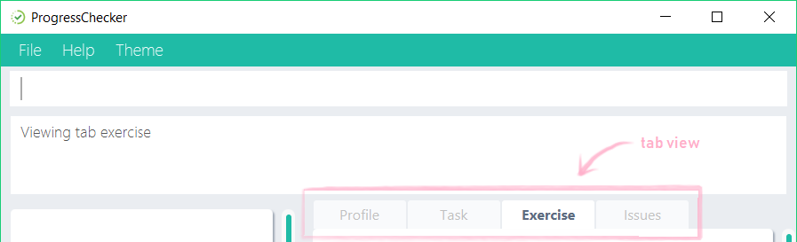
By default, the exercise tab shows exercises from the latest available school week. You can view the exercises in other weeks as well.
Format: view exercise WEEK_NUMBER OR v exercise WEEK_NUMBER
Notes:
-
TYPErefers to the tab names you see in the GUI:profile,task,exercise, orissues. -
WEEK_NUMBERrefers to the school week number and must be a positive integer in the range of 2 to 112, 3, …, 11
Examples:
-
view task -
view exercise -
view exercise 5
Toggling theme : theme OR t
You can change the style of the app between a light and dark theme according to your preference.
Format: theme OR t
Examples:
-
theme -
t
Undoing previous command : undo OR u
You may type some commands wrongly, or some unexpected changes happen. You can restore the ProgressChecker to the state before the previous undoable command is executed.
Format: undo OR u
Notes:
-
Undoable commands: those commands that modify the ProgressChecker’s content (
add,answer,delete,editandclear).
Examples:
-
delete 1
list
u(reverses thedelete 1command) -
select 1
list
undo
Theundocommand fails as there are no undoable commands executed previously. -
delete 1
clear
undo(reverses theclearcommand)
u(reverses thedelete 1command)
Redoing the previously undone command : redo OR r
You can reverse the most recent undo command if you want to go back to the previous state.
Format: redo OR r
Examples:
-
delete 1
undo(reverses thedelete 1command)
redo(reapplies thedelete 1command) -
delete 1
r
Theredocommand fails as there are noundocommands executed previously. -
delete 1
clear
undo(reverses theclearcommand)
undo(reverses thedelete 1command)
r(reapplies thedelete 1command)
redo(reapplies theclearcommand)
History viewing the list of entered commands : history
You can retrace all the commands that you have entered in reverse chronological order.
Format: history
| You can press the ↑ and ↓ arrows. The previous and next input respectively will display in the command box. |
Example:
-
history
Refreshing the content : refresh OR rf [coming in v2.0]
You can refresh the program to update it to the latest content.
Format: refresh
Examples:
-
refresh -
rf
Clearing all entries : clear OR c
You can clear all information and data inside the ProgressChecker if you want to restore the app.
Format: clear OR c
Running clear will remove the exercises in the software as well! If this was not your intent after running the command, you can undo the change as this is an undoable command! To find out how you can achieve this, check out the undo and redo commands.
|
Examples:
-
clear -
c
Exiting the program : exit OR e
You can exits the program when you are done with the work.
Format: exit OR e
Examples:
-
exit -
e
3.2.2. Exercise
Answering an exercise : answer OR ans [since v1.4r]
You can answer an exercise based on the question index. Your answer will be saved automatically upon answering.
Format: answer QUESTION_INDEX ANSWER
| If you accidentally overwrite your answer to an exercise, you can undo the change as this is an undoable command! To find out how you can achieve this, check out the example section for this command or look at the undo and redo commands. |
Notes:
-
QUESTION_INDEXrefers to the question index shown in the GUI and it must be of the formatWEEK_NUMBER.SECTION_NUMBER.QUESTION_NUMBER, e.g. 2.1.1, 3.2.5, 6.1.7
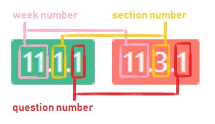You can see if an exercise has been answered by looking at the color of the question index label. The colors are as shown in the image above, where green means it has been answered and red means otherwise. An exercise’s SECTION_NUMBERis directly adopted from CS2103/T’s website.
Examples:
-
answer 2.1.1 Procedural languages work at simple data structures and functions level -
answer 3.5.2 a. Both are UML diagrams.
u(reverses theanswer 3.5.2 a. Both are UML diagrams.command) -
answer 3.5.2 a. Both are UML diagrams.
u(reverses theanswer 3.5.2 a. Both are UML diagrams.command)
r(reapplies theanswer 3.5.2 a. Both are UML diagrams.command)
3.2.3. Issue Tracker
Logging in to Github: gitlogin OR gl
You can login with your Github account and prepare to work with the issues in your team repo.
Format: gitlogin gu/USERNAME pc/PASSWORD r/REPO
OR
gl gu/USERNAME pc/PASSWORD r/REPOSITORY
|
Your git details are not saved in our app for security reasons. Hence, you will need to login every time you start the software. You need to login and mention the repo where you need to create/edit issues. |
Examples:
-
gitlogin gu/johndoe pc/dummy123 r/CS2103T/mainGiven below is the execution outcome of the above command:
You have successfully authenticated github!
Creating an issue on Github: +issue OR ci
You can create an issue in your team repository on github using this command.
Format: +issue ti/TITLE [a/ASSIGNEES]… [ms/MILESTONE] [b/BODY] [l/LABELS]…
OR
ci ti/TITLE [a/ASSIGNEES]… [ms/MILESTONE] [b/BODY] [l/LABELS]…
|
An issue has only 'title' field as compulsory. Rest are all optional. An issue can have more than one assignees and labels. |
Examples:
-
+issue ti/complete issue a/johndoe ms/v1.1 b/CS2103T is a software engineering module l/type.task l/CS2103T -
+issue ti/TestIssue -
ci ti/Issue with only body b/test body l/type.testGiven below is the execution outcome of the above command
Issue successfully created on Github
Editing an issue on Github: +issue OR ci
You can edit an existing issue in the team repository using this command.
Format: editissue INDEX [ti/TITLE] [a/ASSIGNEES]… [ms/MILESTONE] [b/BODY] [l/LABELS]…
OR
edi ti/TITLE [a/ASSIGNEES]… [ms/MILESTONE] [b/BODY] [l/LABELS]…
If you don’t remember the issue number, you can take a look at the issues by using listissues command.An issue can have more than one assignees and labels. |
Examples:
-
editissue 1 ti/Changed title -
editissue ti/changed title b/changed body -
edi l/type.taskGiven below is the execution outcome of the above command
Issue successfully edited on Github
Closing an issue on Github: -issue OR cli
You can close the specified issue on github after you have resolved it using this command.
Format: -issue INDEX OR cli INDEX
If you don’t remember the issue number, you can take a look at the issues by using listissues command. |
INDEX refers to the #INDEX of an issue on github
|
Examples:
-
-issue 17 -
cli 17Given below is the execution outcome of the above command
Issue #17 closed successfully
Reopening an issue on Github: reopenissue OR ri
You can reopen a certain issue on github using this command.
Format: reopenissue INDEX OR ri INDEX
If you don’t remember the issue number, you can take a look at the issues by using listissues command. |
INDEX refers to the #INDEX of an issue on github
|
Examples:
-
reopenissue 17 -
reopenissue 17Given below is the execution outcome of the above command
Issue #17 reopened successfully
Listing github issues: listissue OR lis
You can list the github issues using this command.
Format: listissue STATE OR lis STATE
STATE refers to the state of the issue, i.e OPEN or CLOSED
|
Examples:
-
listissue OPEN -
lis CLOSEDGiven below is the execution outcome of the above command
All the OPEN issues are being viewed
Logging out of Github: gitlogout OR glo
You can logout of github after logging in.
| You will get an error message if you try to logout before logging in. |
Examples:
-
gitlogout -
gloGiven below is the execution outcome of the above command
You have successfully logged out of github
3.2.4. Task List
Add default task list: newtasklist OR nl
You can add the default task list to the ProgressChecker and your Google Tasks to prepare for your work.
Format: newtasklist OR nl
-
This command should be executed before all other task-related commands
-
The command requires Internet connection. You may be brought to a login page in your browser. Please do not close the tab without accepting/declining request, otherwise the application will hang.
-
This command will take a long time (roughly 40s) to load all the tasks. Fortunately, you only need to do this command ONCE in the lifetime of the application. Please do not interrupt when this command is executing. If the app is hanging (showing no response), it means it is still processing.
Examples:
-
newtasklist -
nl
Viewing the default task list: viewtask OR vt
You can view the current default task list in the browser panel in ProgressChecker. There are several FILTER_KEYWORD:
"*" means to show everything, "sub" or "submission" means to show tasks that need submission, "com" or "compulsory" means to show compulsory tasks,
an interger ranging from 1 to 13 means to show tasks in that week.
Format: viewtask FILTER_KEYWORD OR vt FILTER_KEYWORD
-
You should NOT call this command before calling
newtasklistcommand. -
The command requires Internet connection. You may be brought to a login page in your browser. Please do not close the tab without accepting/declining request, otherwise the application will hang.
Examples:
-
viewtask compulsory -
viewtask 3 -
viewtask sub -
vt com -
vt *
The screenshot below shows what you can see with command vt com.
vt com CommandCompleting a task: complete OR ct
You can mark the task as completed when you finish it. You cannot use undo command to undo it, but can use reset INDEX command to obtain the same effect.
Format: complete INDEX OR ct INDEX
Notes:
-
You can mark the task with index number
INDEXas completed. -
The index refers to the index number shown in the most recent listing.
-
The index must be a positive integer 1, 2, 3, …
-
You should NOT call this command before calling
newtasklistcommand. -
The command requires Internet connection. You may be brought to a login page in your browser. Please do not close the tab without accepting/declining request, otherwise the application will hang.
Examples:
-
complete 1 -
ct 1
Tasks that have not been completed are in red box while green boxes mean these tasks are already completed. The screenshot below shows what you can see with command ct 2 on the compulsory list.
ct 2 CommandResetting a task as not completed: reset OR rt
You can reset a task as not completed when you marked it as completed by mistake. You cannot use undo command to undo it, but can use complete INDEX command to obtain the same effect.
Format: reset INDEX OR rt INDEX
Notes:
-
You can reset the task with index number
INDEXas incompleted. -
The index refers to the index number shown in the most recent listing.
-
The index must be a positive integer 1, 2, 3, …
-
You should NOT call this command before calling
newtasklistcommand. -
The command requires Internet connection. You may be brought to a login page in your browser. Please do not close the tab without accepting/declining request, otherwise the application will hang.
*Examples:*
-
reset 1 -
rt 1
Open URL of a task: goto OR go
You can visit the webpage of a task when you want to see details and work on it.
Format: goto INDEX OR go INDEX
Notes:
-
You can visit URL of the task with index number
INDEXas incompleted. -
The index refers to the index number shown in the most recent listing.
-
The index must be a positive integer 1, 2, 3, …
-
You should NOT call this command before calling
newtasklistcommand. -
The command requires Internet connection. You may be brought to a login page in your browser. Please do not close the tab without accepting/declining request, otherwise the application will hang.
*Examples:*
-
goto 1 -
go 1
The screenshot below shows what you can see with command go 2 on the compulsory list.
ct 2 Command3.2.5. Teammate
Adding a teammate: add OR a
You can add the contact information of a new teammate to the ProgressChecker.
Format: add n/NAME p/PHONE_NUMBER e/EMAIL g/GITHUB_USERNAME m/MAJOR y/YEAR [t/TAG]…
OR
a n/NAME p/PHONE_NUMBER e/EMAIL g/GITHUB_USERNAME m/MAJOR y/YEAR [t/TAG]…
| A teammate can have any number of tags (including 0) |
Examples:
-
add n/John Doe p/98765432 e/johnd@example.com g/johndoeGithub m/Computer Science y/2 -
a n/John Doe p/98765432 e/johnd@example.com g/johndoeGithub m/Computer Science y/2 -
add n/Betsy Crowe t/friend e/betsycrowe@example.com g/betsycroweGithub m/Computer Engineering p/1234567 y/3 t/criminal -
a n/Betsy Crowe t/friend e/betsycrowe@example.com g/betsycroweGithub m/Information Security y/2 p/1234567 t/criminal
Editing a teammate : edit OR ed
You can edit the information of the certain existing teammate in the ProgressChecker.
Format: edit INDEX [n/NAME] [p/PHONE_NUMBER] [e/EMAIL] [g/GITHUB_USERNAME] [m/MAJOR] [y/YEAR] [t/TAG]…
OR
ed INDEX [n/NAME] [p/PHONE_NUMBER] [e/EMAIL] [g/GITHUB_USERNAME] [m/MAJOR] [y/YEAR] [t/TAG]…
Notes:
-
You can edit the information of the teammate at the specified
INDEX. The index refers to the index number shown in the last teammate listing. The index must be a positive integer 1, 2, 3, … -
At least one of the optional fields must be provided.
-
Existing values will be updated to the input values.
-
When editing tags, the existing tags of the teammate will be removed i.e adding of tags is not cumulative.
-
You can remove all the teammate’s tags by typing
t/without specifying any tags after it.
Examples:
-
edit 1 p/91234567 e/johndoe@example.com
Edits the phone number and email address of the 1st teammate to be91234567andjohndoe@example.comrespectively. -
edit 2 n/Betsy Crower t/
Edits the name of the 2nd teammate to beBetsy Crowerand clears all existing tags.
Uploading profile photo
You can upload a image from your local PC as a profile photo for yourself or your teammates in ProgressChecker.
Format upload INDEX PATH OR up INDEX PATH
Notes:
-
You can update the profile photo of the teammate at the specified
INDEX. The index refers to the index number shown in the last teammate listing. The index must be a positive integer 1, 2, 3, … -
The extension of the image to upload can only be 'jpg', 'jepg' or 'png'.
-
The local path cannot have white space inside.
-
Image to upload will be copied to the contact folder which is inside resources.
Examples:
-
upload 1 C:\Users\Livian\Desktop\image.png
Uploads the image with local path 'C:\Users\Livian\image.png' as the profile photo of the first person.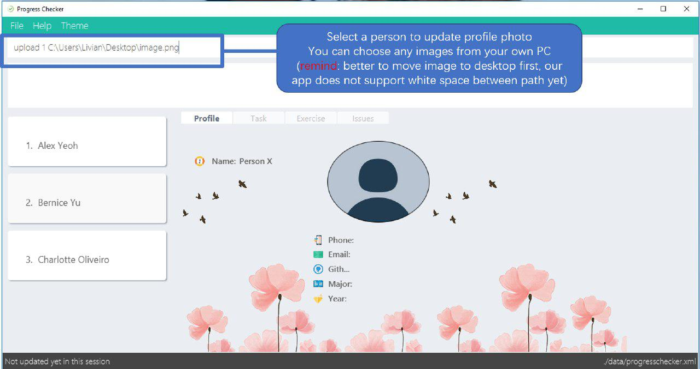You will see the following changes when you upload the profile photo successfully:
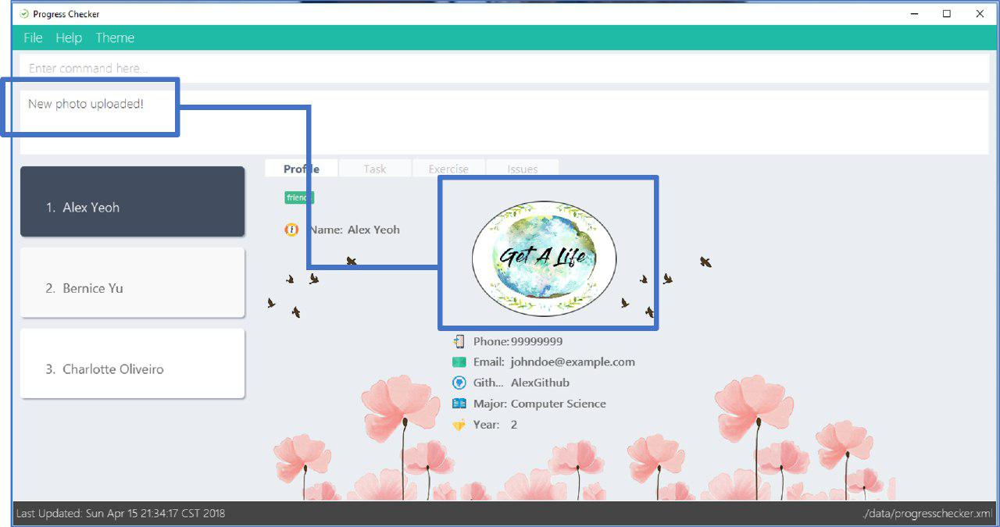
Listing all teammates : list OR l
You can view the list of all your teammates in the ProgressChecker.
Format: list OR l
Examples:
-
list -
l
Uploading profile photo
You can upload a image from your local PC as a profile photo for yourself or your teammates in ProgressChecker.
Format upload INDEX PATH OR up INDEX PATH
Notes:
-
You can update the profile photo of the teammate at the specified
INDEX. The index refers to the index number shown in the last teammate listing. The index must be a positive integer 1, 2, 3, … -
The extension of the image to upload can only be 'jpg', 'jepg' or 'png'.
-
Image to upload will be copied to the contact folder which is inside resources.
Examples:
-
upload 1 C:\Users\User\Desktop\profilePhoto.png
Uploads the image with local path 'C:\Users\User\profilePhoto.png' as the profile photo of the first person.
Sorting all teammates : sort
You can view the list of all your teammates in the ProgressChecker with their names in alphabetical order.
Format: sort
Example:
-
sort
Finding/Searching teammates by the keywords of name: find OR search
You can find the certain teammates with their names contain any of the given keywords.
Format: find KEYWORD [MORE_KEYWORDS] OR search KEYWORD [MORE_KEYWORDS]
Notes:
-
The search is case insensitive. e.g
hanswill matchHans -
The search is dynamic. As the user types alphabets, the results will be shown without the need to press enter key
-
The order of the keywords does not matter. e.g.
Hans Bowill matchBo Hans -
Only the name is searched.
-
Only full words will be matched e.g.
Hanwill not matchHans -
Teammates matching at least one keyword will be returned (i.e.
ORsearch). e.g.Hans Bowill returnHans Gruber,Bo Yang
Examples:
-
find John
ReturnsjohnandJohn Doe -
search Betsy Tim John
Returns any teammate having namesBetsy,Tim, orJohn
Selecting a teammate : select OR s
You can select the teammate identified by the index number used in the last teammate listing.
Format: select INDEX OR s INDEX
Notes:
-
You can select the teammate and loads the Google search page the teammate at the specified
INDEX. -
The index refers to the index number shown in the most recent listing.
-
The index must be a positive integer
1, 2, 3, …
Examples:
-
list
select 2
Selects the 2nd teammate in the ProgressChecker. -
find Betsy
s 1
Selects the 1st teammate in the results of thefindcommand.
Deleting a teammate : delete OR d
You can remove the specified teammate from the ProgressChecker.
Format: delete INDEX OR d INDEX
Notes:
-
You can remove the teammate at the specified
INDEX. -
The index refers to the index number shown in the most recent listing.
-
The index must be a positive integer 1, 2, 3, …
Examples:
-
list
delete 2
Deletes the 2nd teammate in the ProgressChecker. -
find Betsy
d 1
Deletes the 1st teammate in the results of thefindcommand.
3.3. Saving the data
Progress Checker data are saved in the hard disk automatically after any command that changes the data.
There is no need to save manually.
4. FAQ
You may encounter some questions related to other aspects of ProgressChecker other than what the commands are. This section list some frequently asked questions that you may find useful.
Q: How do I transfer my data to another Computer?
A: Install the app in the other computer and overwrite the empty data file it creates with the file that contains the data of your previous ProgressChecker folder.
Q: Will the command work if I type in capital letters?
A: Yes. The commands are case-insensitive.
Q: Will the changes I made in ProgressChecker still be intact upon closing and reopening the app?
A: Yes. All changes made are saved automatically into the data folder. As long as you do not directly edit the data file, the content will remain the same when you reopen the app.
Q: How do I close the app?
A: You can either type the exit command or click on the 'x' button in the top right corner of the app.
5. Command Summary
If you’re looking for a quick reference list of commands without all the details, the section below summarises all the available commands.
Function |
Command |
Example |
Add |
|
add n/James Ho p/22224444 e/jamesho@example.com g/JamesGithub m/Computer Science y/2 t/friend t/colleague |
Answer |
|
answer 2.1.1 Procedural languages work at simple data structures and functions level |
Clear |
|
|
Close issue |
|
-issue 3 |
Create issue |
|
+issue ti/complete issue a/johndoe ms/v1.1 b/CS2103T is a software engineering module l/type.task l/CS2103T |
Delete |
|
delete 3 |
Edit |
|
edit 2 n/James Lee e/jameslee@example.com |
Editissue |
|
editissue 2 ti/new title l/bug |
Exit |
|
|
Find |
|
find James Jake |
Help |
|
|
History |
|
|
List |
|
|
List issue |
|
listissue OPEN |
Log in to Github |
|
|
Log out of Github |
|
|
Add Default Task List |
|
|
Complete Task |
|
complete 1 |
Reset Task |
|
reset 1 |
Open Task URL |
|
goto 1 |
View Task List |
|
viewtask 5 |
Redo |
|
|
Refresh |
|
|
Reopen issue |
|
reopenissue 3 |
Reset a task |
|
|
Search |
|
search James Jake |
Select |
|
select 2 |
Sort |
|
|
Theme |
|
|
Undo |
|
|
Upload |
|
upload 1 C:\Users\User\Desktop\profile_photo.jpg |
View tab |
|
view task |
View exercises by week |
|
view exercise 5 |
View task |
|
Back to the TOP